Where the first version was wrong
A/B testing. Five participants compared two layouts; four preferred seeing their progress first. They also flagged that it took too many clicks to get there, so I moved progress into the profile, a place people visit often anyway.
Usability testing. Five more participants walked the app over video calls: three pandemic-era beginners and two long-time gym-goers. What I heard:
- The workout library and its in-depth tutorials were the clear favorite.
- Consistent, welcoming branding made the app feel credible.
- The stats card confused people; it wasn't clear you could tap to flip it.
- My original vibrant red read as "danger," not the feeling you want after a workout.
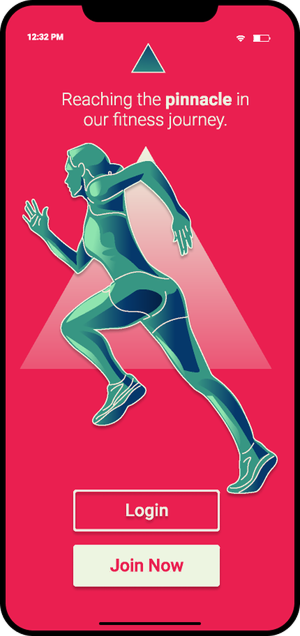
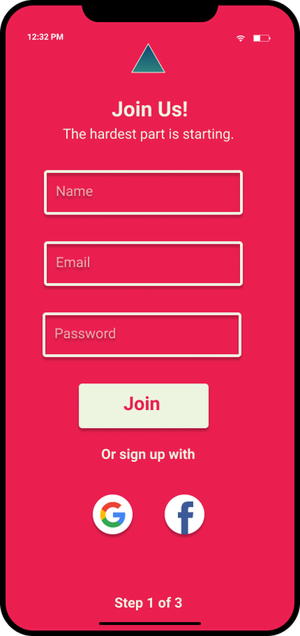
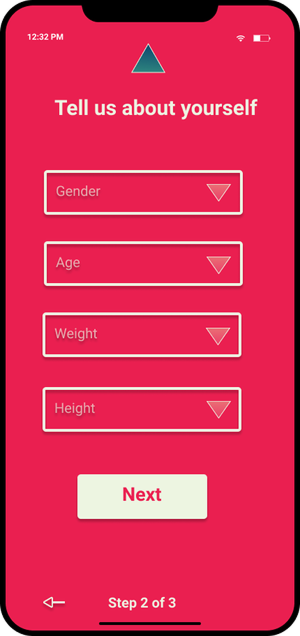
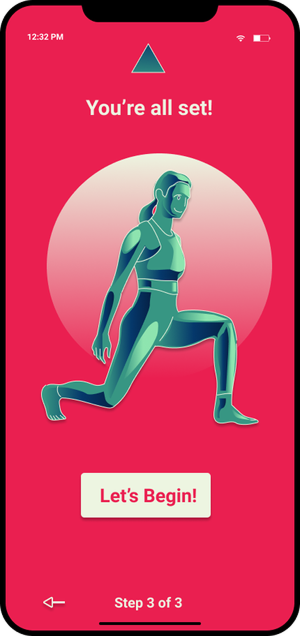
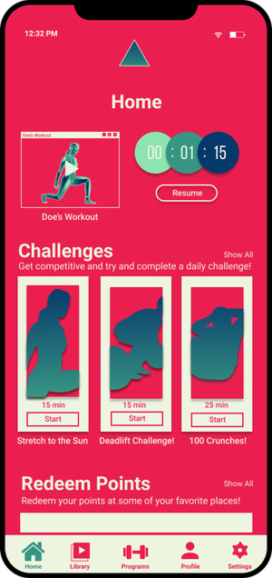
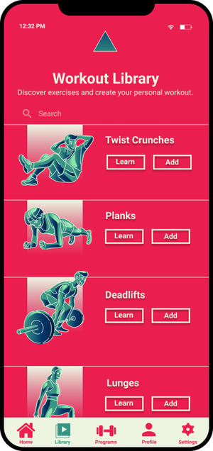
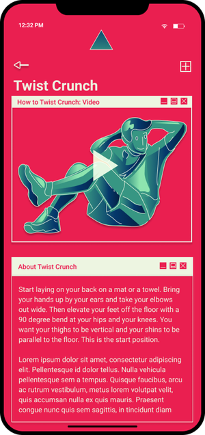
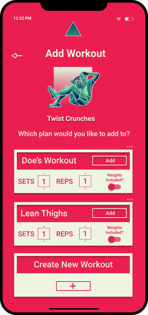
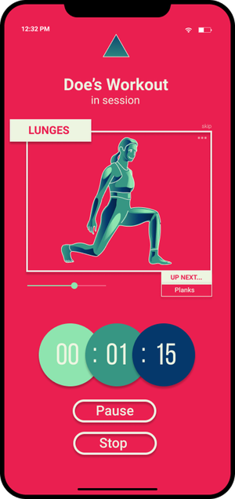
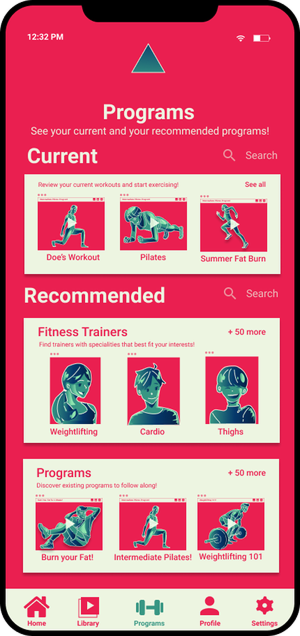
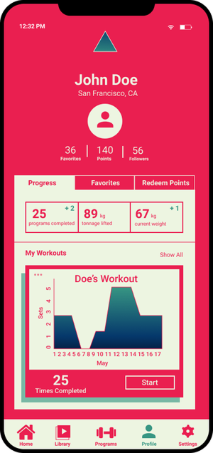
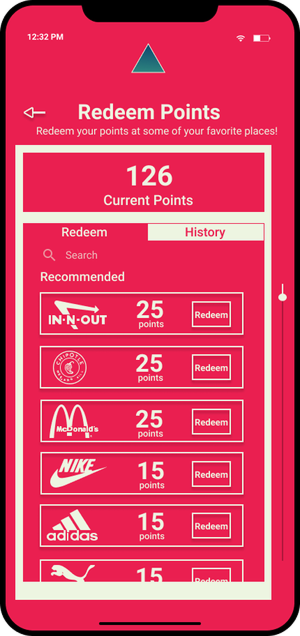
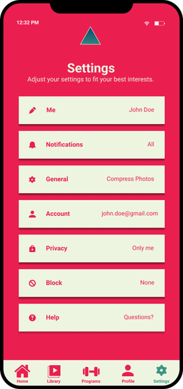

That last point opened the most important change. My first iteration used a bold red background, and tested against green it failed WCAG AA and AAA contrast outright, which would have excluded color-blind and low-vision users. I rebuilt on a neutral black ground and hit AAA across the board. I also moved from pure graphics to a hybrid of icons and real photos, and added a "resume your latest workout" shortcut on the home screen.
The calls I made, and why
I gravitate toward vivid palettes, but I'd never really considered how color affects accessibility. WCAG's AA and AAA levels measure contrast between foreground and background, and my initial red-green combo failed outright. Keeping it would have excluded visually-impaired users, including people who are color-blind. So I switched to a neutral black background, which paired with the main font color scored straight AAA across the board. I'm glad I failed first, because it made me value color accessibility far more.
This felt like a no-brainer; I'd always pictured Pinnacle using real-life photos. But I had to actually put them in the prototype to see whether they'd still communicate clearly. I landed on a hybrid: icons where consistent branding matters most, like the workout library, and real photos everywhere else.
It was my fault the path to a user's workout programs wasn't obvious. So I added a way to jump back into their most recent workout right from the home screen, giving them easy access anywhere, anytime.
The redesign, screen by screen
The full app after iteration: neutral ground, AAA contrast, and the workout library front and center.
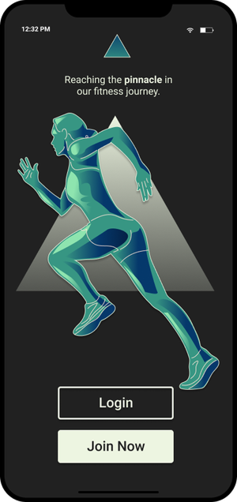
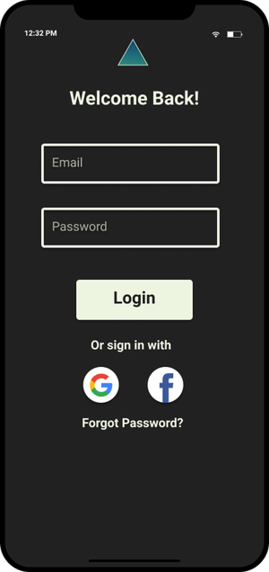
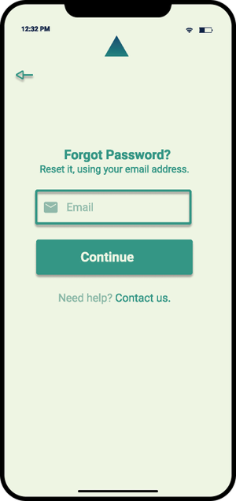
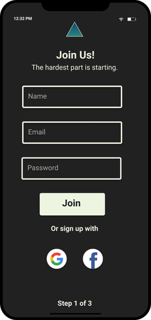
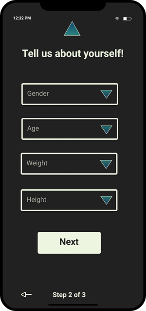
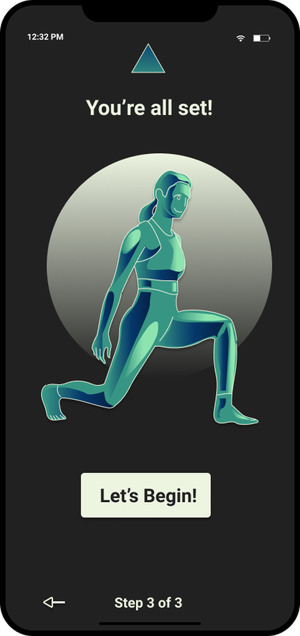
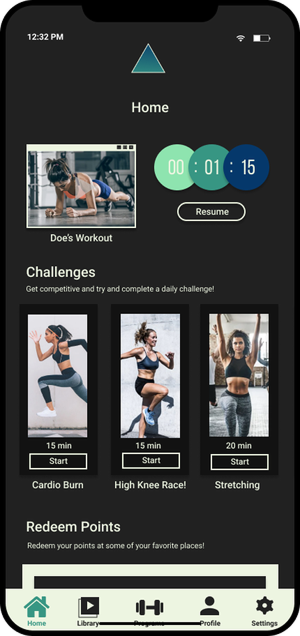
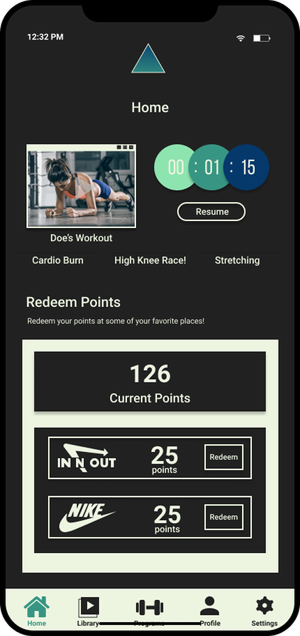
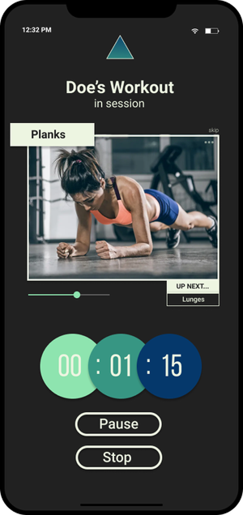
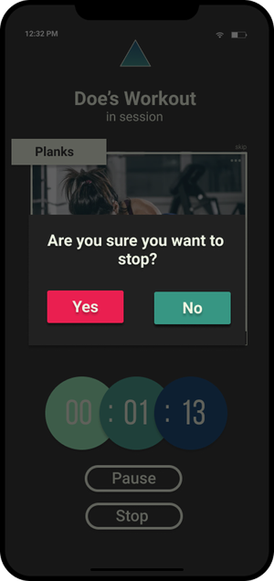
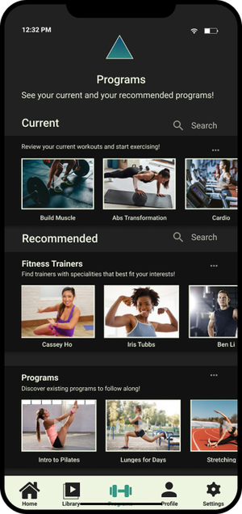
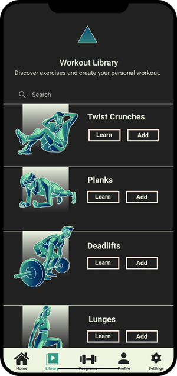
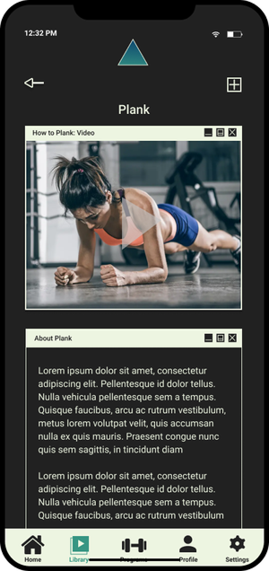
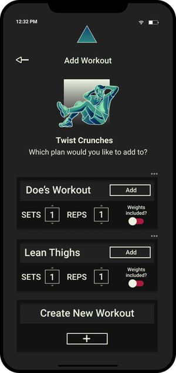
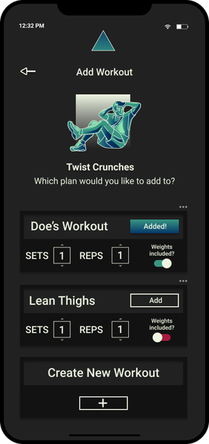
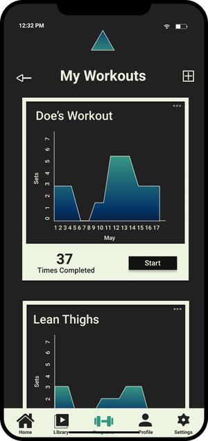
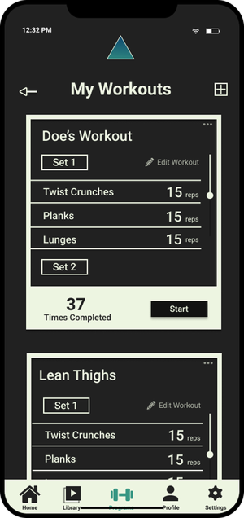
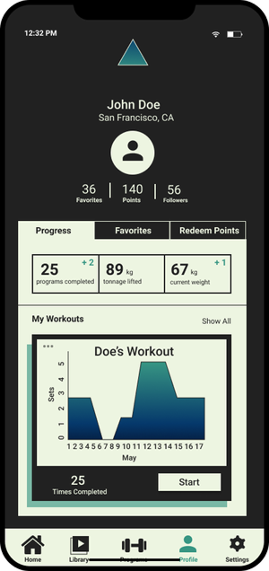
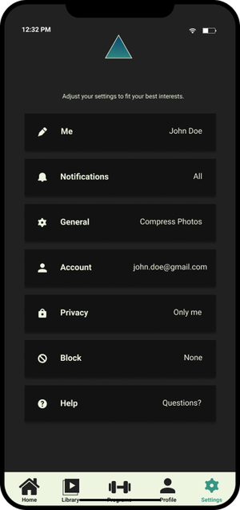
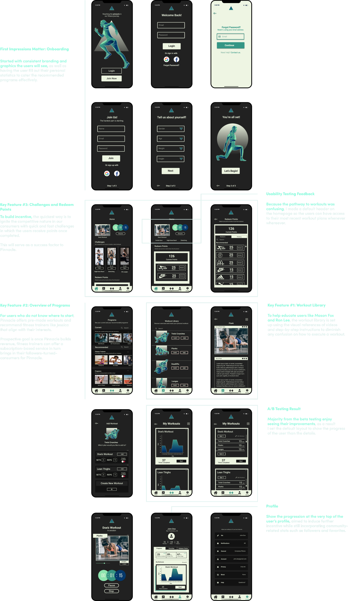